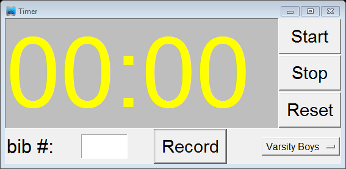

Timer Dialog
- When in Timer mode or Standalone mode, the “Open Timer” button is displayed on the Bibs/Timing page. Before starting each race, click the “Open Timer” button (or access the timer via the menu, Timing -> Open Timer selection). This is a required step even when using timing equipment to time the race. This will prompt you to assign the timer to the group (or groups if running multiple simultaneous groups) to that timer.
Select the group(s) that you are about to start timing and press the Ok button. You are presented with a timer to use for timing the race:

The Timer will always remain as the top most window.
- In the bottom right corner is a "button" showing the list of Groups assigned to this timer. If you click the button, the full list of groups assigned to this timer are displayed. When you start the timer, the groups' race start time is calculated and recorded in the table on the Groups page.
- The initial time of 00:00 is displayed. However, this is an editable field and can be set to any desired duration. For example, if the starting line is a 5 minute walk from the finish line, then you could set the initial time to 05:00, start the race and record using a stop watch. Then walk to the finish line where the timing computer is located. Finally, at the 5 minute mark, start the race timer. The official race start time for the groups assigned to the race timer is calculated by using the offset.
- When performing manual timing, as racers finish, always make sure the correct timer window is the active and highlighted window. At the moment a racer crosses the finish line, press the <enter> key (optionally the “Record” button could be depressed, but is less efficient). This records the racers finish time in the Bibs/Timing Sheet. Optionally, if convenient (such as when a solitary racer is finishing) pre-enter the bib# in the “bib #” field of the timer. As the racer crosses, press <enter> and the bib # and finish time are simultaneously entered in the ABib# and Time fields. The ABib# is important as it serves as an alignment validation for bib entry being performed by the bib entry operator. If errors are detected, they can be corrected by the timer operator in real-time. Simply make sure that before the next finisher crosses, if manual timing, that the timer is the highlighted/active window.
- Note that two timers, assigned to different groups, can operate simultaneously. For instance if a race is running longer than anticipated and there are still a few slow runners on the course, the next race in the event can be started without affecting the timing of the current race. Simply open a 2nd timer and assign it to the group(s) running the next race. Then start the race. As the previous race’s final runners finish, ensure that the <enter> key is pressed while that race’s timer is highlighted/active. Noting that the race assignment for a time is listed on the bottom right of the timer.
- Once a race is complete, stop the timer, and close the timer. You will then be prompted with a message asking if you wish to mark the assigned Groups as “Finished”. If you answer yes, then the race will be marked finished and official results will be calculated and published. If you are not ready to certify the results, then answer no. You can mark the race finished on the “Groups” page when you are ready.
- You can Import Bibs and Timing data directly from Excel via menu option, Import -> Import Finish Bibs/Times from Excel. The source Excel worksheet with times in Column “A” and Bib#’s in Column “B”. This feature allows you to import finish data from another host’s race into xcscoreboard so you can check their scoring or run ‘a what if’ analysis.